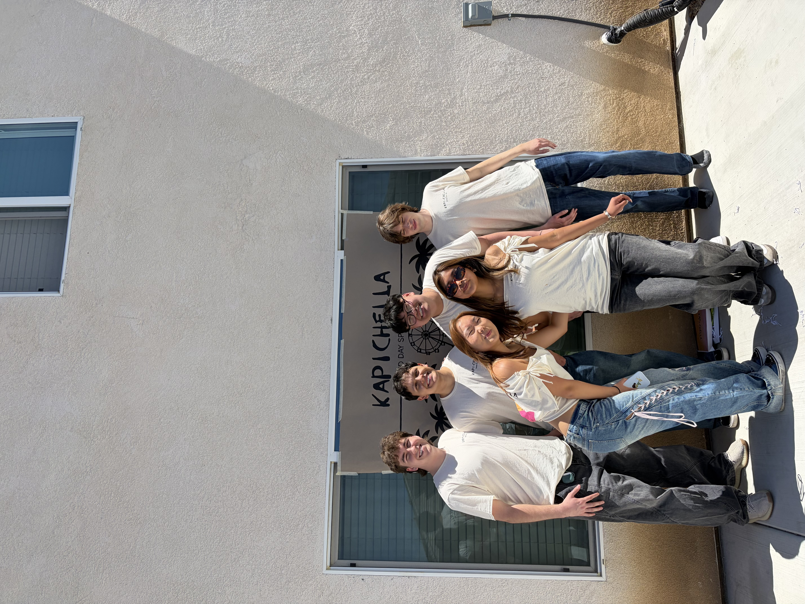
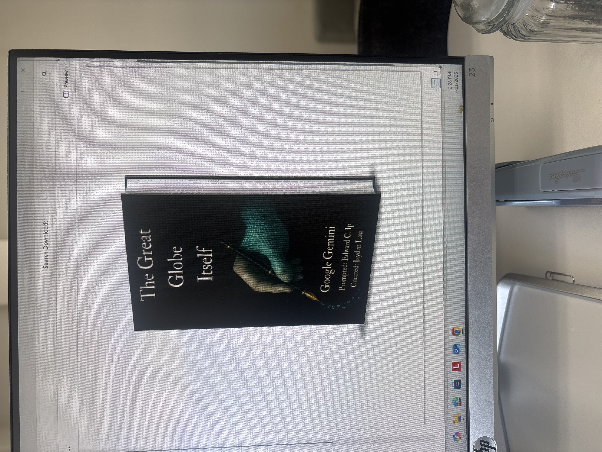
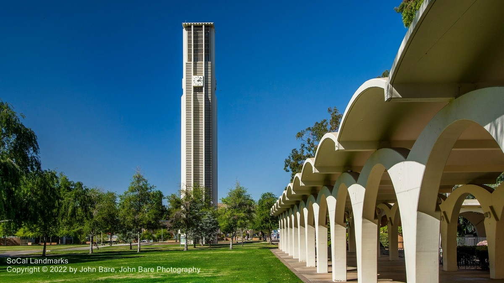
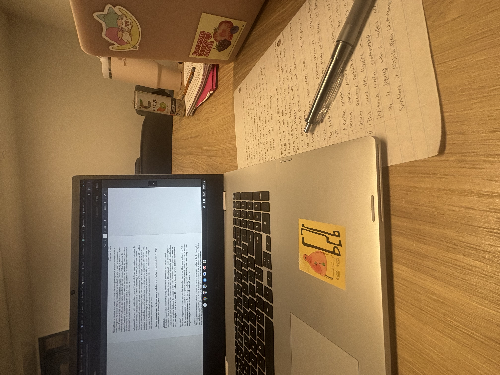

My name is Jayden Lau, and I am a Political Science student at the University of California, Riverside. I am interested in law, government, and public policy, and I hope to pursue a career in the legal field. Outside of school, I serve as Vice President of Finance for Kappa Alpha Pi's UCR Gamma Chapter and work as a curator for A.I. Unlimited Publishing House LLC. In my free time, I enjoy going to the gym, playing pickleball, and spending time with friends.
• Help oversee chapter finances and dues collection
• Communicate payment policies, deadlines, and financial expectations
• Assist with budgeting, funding requests, and expense planning
• Coordinate with chapter leadership on financial operations
• Help members understand payment options and financial procedures
• Contributed to the curation and editing of two books
• Participated in preparing book covers and publishing materials
• Helped refine written content for publication
• Contributed to creative projects and the preparation of finished works
• Develop research, writing, and analytical thinking skills
• Study government, political institutions, and public policy
• Strengthen professional communication and critical thinking
• Pursue academic and professional development opportunities
A selection of academic, leadership, and publishing projects that reflect my interests and professional development.



